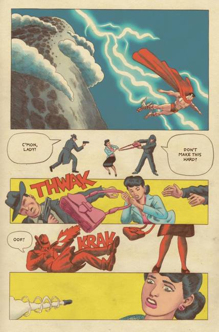
×
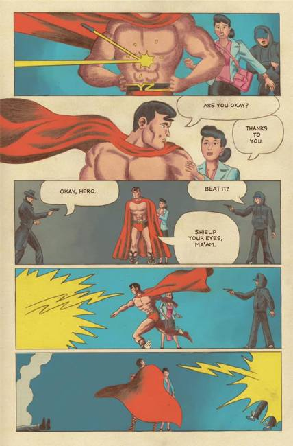
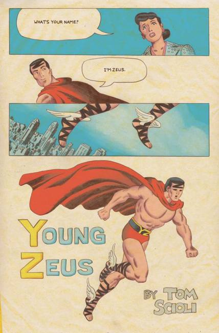
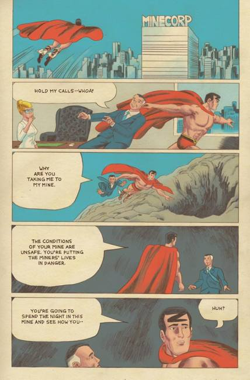
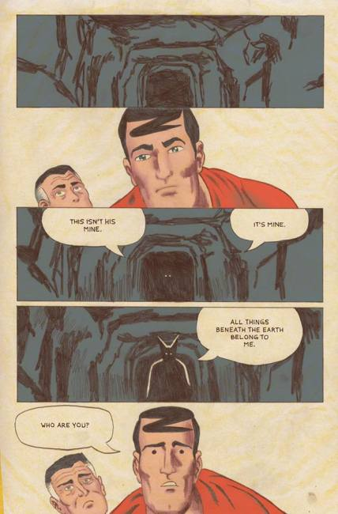
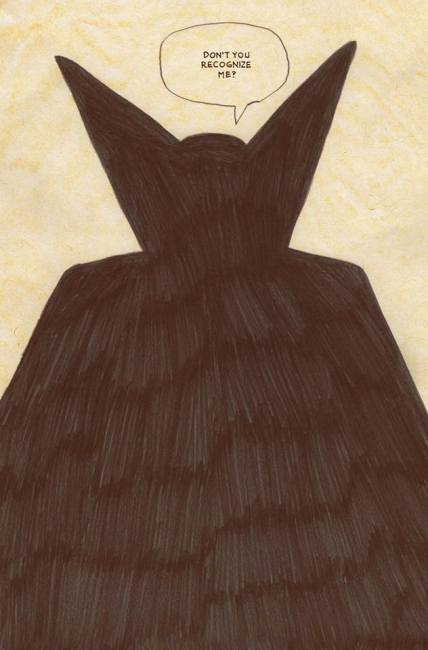
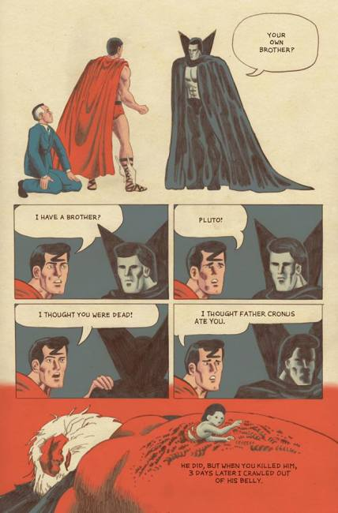
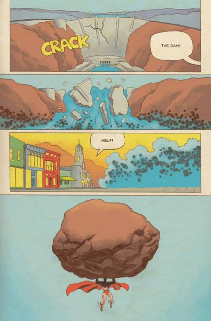
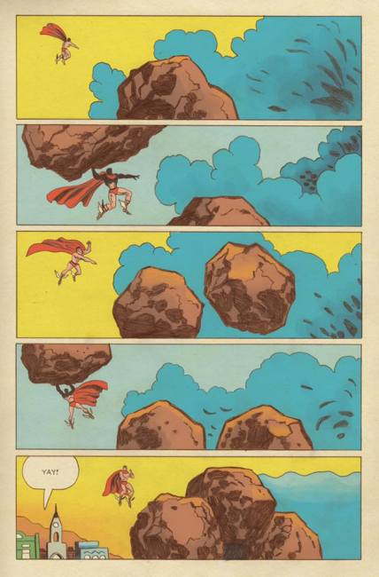
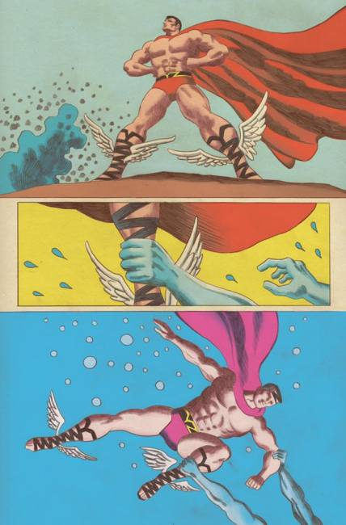
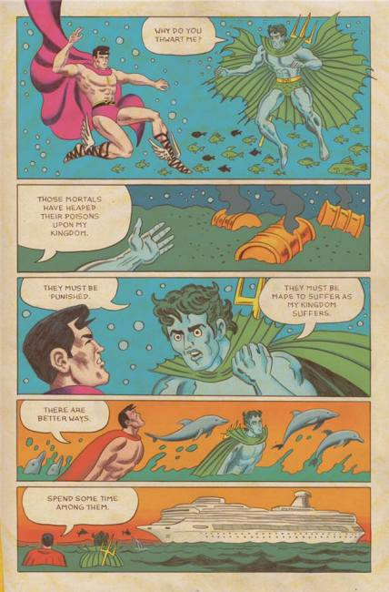
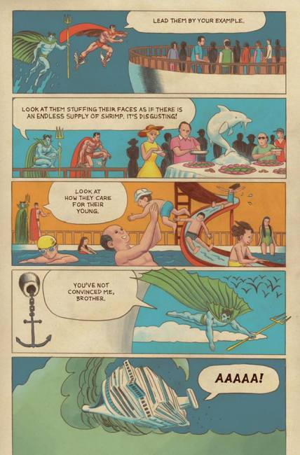
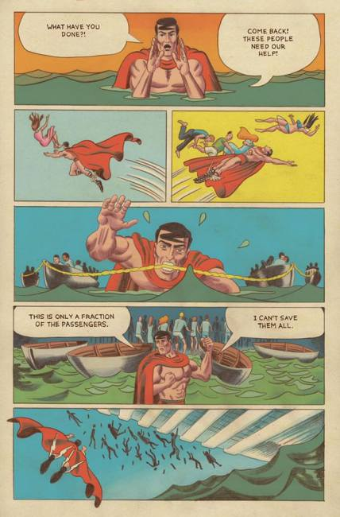
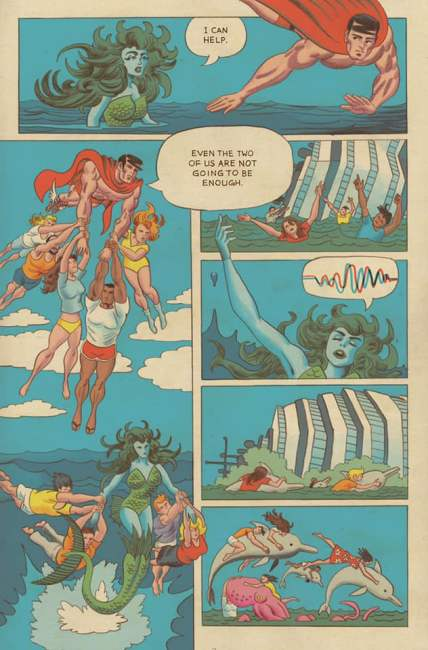
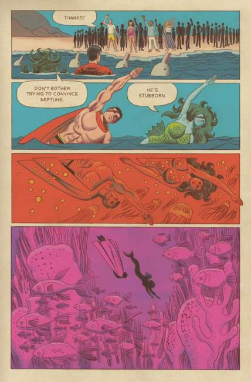
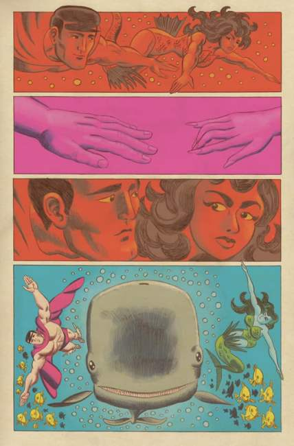
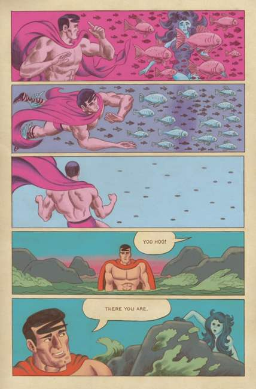
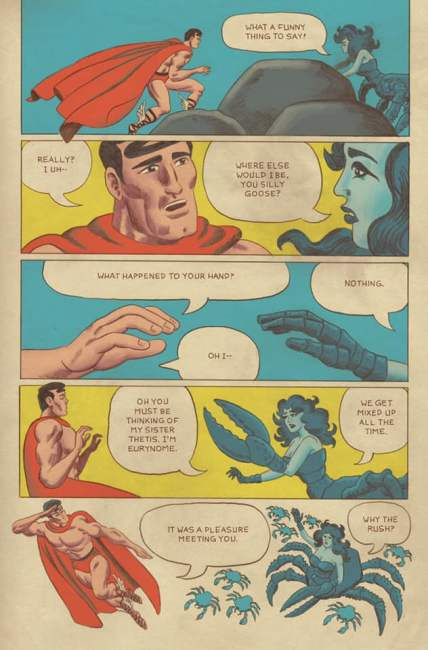
❮
❯
Thomas Scioli (1977) is an American comic book artist and writer best known for working in a style similar to Jack Kirby.
Main Site: tomscioli.com
Online Comics (Kirby, Princess, Final Frontier, Satan Soldier, American Barbarian) at ambarb.com
Comics work includes:
The Myth of 8-Opus
Freedom Force (with Eric Dieter, Image Comics, January–June 2005)
Gødland #1-37 (with writer Joe Casey, Image Comics, July 2005 – July 2012)
Elephantmen #3 (artist, Image Comics, September 2006)
"Space Smith" (script and art, in Next Issue Project #1, Image Comics, February 2008)
"Teddy and the Yeti" (cover art, Wagon Wheel Comics, April 2010)
Gobots (2019)
Fantastic Four: Grand Design (writer and artist, Marvel Comics, December 2019)